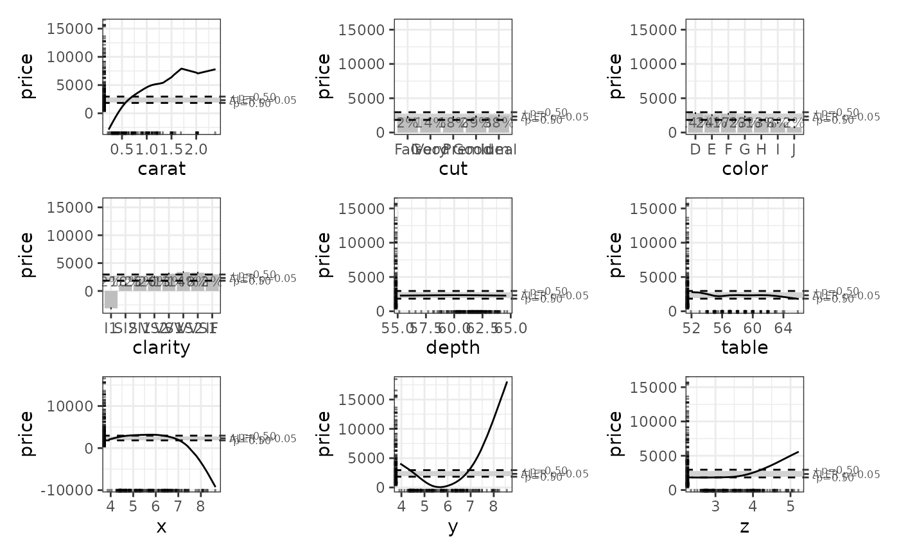

Create a p-value functions object that can be used to generate p-values
Source:R/stats.R
create_p_funs.RdCalculating p-values is not trivial for ALE statistics because ALE is
non-parametric and model-agnostic. Because ALE is non-parametric (that is,
it does not assume any particular distribution of data), the ale package
generates p-values by calculating ALE for many random variables; this makes the
procedure somewhat slow. For this reason, they are not calculated by default;
they must be explicitly requested. Because the ale package is model-agnostic (that is, it
works with any kind of R model), the ale() function cannot always automatically
manipulate the model object to create the p-values. It can only do so for
models that follow the standard R statistical modelling conventions, which
includes almost all built-in R algorithms (like stats::lm() and stats::glm()) and many widely
used statistics packages (like mgcv and survival), but which excludes most
machine learning algorithms (like tidymodels and caret). For non-standard
algorithms, the user needs to do a little work to help the ale function
correctly manipulate its model object:
The full model call must be passed as a character string in the argument 'random_model_call_string', with two slight modifications as follows.
In the formula that specifies the model, you must add a variable named 'random_variable'. This corresponds to the random variables that
create_p_funs()will use to estimate p-values.The dataset on which the model is trained must be named 'rand_data'. This corresponds to the modified datasets that will be used to train the random variables.
See the example below for how this is implemented.
Usage
create_p_funs(
data,
model,
...,
parallel = parallel::detectCores(logical = FALSE) - 1,
model_packages = as.character(NA),
random_model_call_string = NULL,
random_model_call_string_vars = character(),
y_col = NULL,
pred_fun = function(object, newdata, type = pred_type) {
stats::predict(object =
object, newdata = newdata, type = type)
},
pred_type = "response",
rand_it = 1000,
silent = FALSE,
.testing_mode = FALSE
)Arguments
- data
See documentation for
ale()- model
See documentation for
ale()- ...
not used. Inserted to require explicit naming of subsequent arguments.
- parallel
See documentation for
ale()- model_packages
See documentation for
ale()- random_model_call_string
character string. If NULL,
create_p_funs()tries to automatically detect and construct the call for p-values. If it cannot, the function will fail early. In that case, a character string of the full call for the model must be provided that includes the random variable. See details.- random_model_call_string_vars
See documentation for
model_call_string_varsinmodel_bootstrap(); the operation is very similar.- y_col
See documentation for
ale()- pred_fun, pred_type
See documentation for
ale().- rand_it
non-negative integer length 1. Number of times that the model should be retrained with a new random variable. The default of 1000 should give reasonably stable p-values. It can be reduced as low as 100 for faster test runs.
- silent
See documentation for
ale()- .testing_mode
logical. Internal use only.
Value
The return value is a list of class c('p_funs', 'ale', 'list') with an
ale_version attribute whose value is the version of the ale package used to
create the object. See examples for an illustration of how to inspect this list.
Its elements are:
value_to_p: a list of functions named for each each available ALE statistic. Each function signature isfunction(x)where x is a numeric. The function returns the p-value (minimum 0; maximum 1) for the respective statistic based on the random variable analysis. For an input x that returns p, its interpretation is that p% of random variables obtained the same or higher statistic value. For example, to get the p-value of a NALED of 4.2, enterp_funs$value_to_p(4.2). A return value of 0.03 means that only 3% of random variables obtained a NALED greater than or equal to 4.2.p_to_random_value: a list of functions named for each each available ALE statistic. These are the inverse functions ofvalue_to_p. The signature isfunction(p)where p is a numeric from 0 to 1. The function returns the numeric value of the random variable statistic that would yield the provided p-value. For an input p that returns x, its interpretation is that p% of random variables obtained the same or higher statistic value. For example, to get the random variable ALED for the 0.05 p-value, enterp_funs$p_to_random_value(0.05). A return value of 102 means that only 5% of random variables obtained an ALED greater than or equal to 102.rand_stats: a tibble whose rows are each of therand_ititerations of the random variable analysis and whose columns are the ALE statistics obtained for each random variable.residuals: the actualy_colvalues fromdataminus the predicted values from themodel(without random variables) on thedata.residual_distribution: the closest estimated distribution for theresidualsas determined byunivariateML::rml(). This is the distribution used to generate all the random variables.
Approach to calculating p-values
The ale package takes a literal frequentist approach to the calculation of
p-values. That is, it literally retrains the model 1000 times, each time
modifying it by adding a distinct random variable to the model.
(The number of iterations is customizable
with the rand_it argument.) The ALEs and ALE statistics are calculated for
each random variable. The percentiles of the distribution of these
random-variable ALEs are then used to determine p-values for non-random variables.
Thus, p-values are interpreted as the frequency of random variable ALE statistics
that exceed the value of ALE statistic of the actual variable in question.
The specific steps are as follows:
The residuals of the original model trained on the training data are calculated (residuals are the actual y target value minus the predicted values).
The closest distribution of the residuals is detected with
univariateML::model_select().1000 new models are trained by generating a random variable each time with
univariateML::rml()and then training a new model with that random variable added.The ALEs and ALE statistics are calculated for each random variable.
For each ALE statistic, the empirical cumulative distribution function (from
stats::ecdf()) is used to create a function to determine p-values according to the distribution of the random variables' ALE statistics.
References
Okoli, Chitu. 2023. “Statistical Inference Using Machine Learning and Classical Techniques Based on Accumulated Local Effects (ALE).” arXiv. https://arxiv.org/abs/2310.09877.
Examples
# \donttest{
# Sample 1000 rows from the ggplot2::diamonds dataset (for a simple example)
set.seed(0)
diamonds_sample <- ggplot2::diamonds[sample(nrow(ggplot2::diamonds), 1000), ]
# Create a GAM model with flexible curves to predict diamond price
# Smooth all numeric variables and include all other variables
gam_diamonds <- mgcv::gam(
price ~ s(carat) + s(depth) + s(table) + s(x) + s(y) + s(z) +
cut + color + clarity,
data = diamonds_sample
)
summary(gam_diamonds)
#>
#> Family: gaussian
#> Link function: identity
#>
#> Formula:
#> price ~ s(carat) + s(depth) + s(table) + s(x) + s(y) + s(z) +
#> cut + color + clarity
#>
#> Parametric coefficients:
#> Estimate Std. Error t value Pr(>|t|)
#> (Intercept) 3421.412 74.903 45.678 < 2e-16 ***
#> cut.L 261.339 171.630 1.523 0.128170
#> cut.Q 53.684 129.990 0.413 0.679710
#> cut.C -71.942 103.804 -0.693 0.488447
#> cut^4 -8.657 80.614 -0.107 0.914506
#> color.L -1778.903 113.669 -15.650 < 2e-16 ***
#> color.Q -482.225 104.675 -4.607 4.64e-06 ***
#> color.C 58.724 95.983 0.612 0.540807
#> color^4 125.640 87.111 1.442 0.149548
#> color^5 -241.194 81.913 -2.945 0.003314 **
#> color^6 -49.305 74.435 -0.662 0.507883
#> clarity.L 4141.841 226.713 18.269 < 2e-16 ***
#> clarity.Q -2367.820 217.185 -10.902 < 2e-16 ***
#> clarity.C 1026.214 180.295 5.692 1.67e-08 ***
#> clarity^4 -602.066 137.258 -4.386 1.28e-05 ***
#> clarity^5 408.336 105.344 3.876 0.000113 ***
#> clarity^6 -82.379 88.434 -0.932 0.351815
#> clarity^7 4.017 78.816 0.051 0.959362
#> ---
#> Signif. codes: 0 ‘***’ 0.001 ‘**’ 0.01 ‘*’ 0.05 ‘.’ 0.1 ‘ ’ 1
#>
#> Approximate significance of smooth terms:
#> edf Ref.df F p-value
#> s(carat) 7.503 8.536 4.114 3.65e-05 ***
#> s(depth) 1.486 1.874 0.601 0.614753
#> s(table) 2.929 3.738 1.294 0.240011
#> s(x) 8.897 8.967 3.323 0.000542 ***
#> s(y) 3.875 5.118 11.075 < 2e-16 ***
#> s(z) 9.000 9.000 2.648 0.004938 **
#> ---
#> Signif. codes: 0 ‘***’ 0.001 ‘**’ 0.01 ‘*’ 0.05 ‘.’ 0.1 ‘ ’ 1
#>
#> R-sq.(adj) = 0.94 Deviance explained = 94.3%
#> GCV = 9.7669e+05 Scale est. = 9.262e+05 n = 1000
# Create p-value functions
pf_diamonds <- create_p_funs(
diamonds_sample,
gam_diamonds,
# only 100 iterations for a quick demo; but usually should remain at 1000
rand_it = 100,
)
# Examine the structure of the returned object
str(pf_diamonds)
#> List of 5
#> $ value_to_p :List of 6
#> ..$ aled :function (x)
#> ..$ aler_min :function (x)
#> ..$ aler_max :function (x)
#> ..$ naled :function (x)
#> ..$ naler_min:function (x)
#> ..$ naler_max:function (x)
#> $ p_to_random_value :List of 6
#> ..$ aled :function (p)
#> ..$ aler_min :function (p)
#> ..$ aler_max :function (p)
#> ..$ naled :function (p)
#> ..$ naler_min:function (p)
#> ..$ naler_max:function (p)
#> $ rand_stats : tibble [100 × 6] (S3: tbl_df/tbl/data.frame)
#> ..$ aled : num [1:100] 24.12 19.02 19.08 9.68 15.03 ...
#> ..$ aler_min : num [1:100] -250.7 -306.1 -75.6 -74.7 -242.3 ...
#> ..$ aler_max : num [1:100] 370 387 480 104 119 ...
#> ..$ naled : num [1:100] 0.331 0.264 0.252 0.14 0.216 ...
#> ..$ naler_min: num [1:100] -3 -3.8 -0.7 -0.7 -3 -2.2 -3.1 -6.2 -11.3 -2.5 ...
#> ..$ naler_max: num [1:100] 3.5 3.8 4.7 1.2 1.3 2.1 2.6 8.5 1.7 1.7 ...
#> $ residuals : num [1:1000(1d)] 148 -1056 -1222 -455 1435 ...
#> $ residual_distribution: 'univariateML' Named num [1:4] 9.08 1052.62 2.88 1.25
#> ..- attr(*, "names")= chr [1:4] "mean" "sd" "nu" "xi"
#> ..- attr(*, "model")= chr "Skew Student-t"
#> ..- attr(*, "density")= chr "fGarch::dsstd"
#> ..- attr(*, "logLik")= num -8123
#> ..- attr(*, "support")= num [1:2] -Inf Inf
#> ..- attr(*, "n")= int 1000
#> ..- attr(*, "call")= language f(x = x, na.rm = na.rm)
#> - attr(*, "class")= chr [1:3] "p_funs" "ale" "list"
#> - attr(*, "ale_version")=Classes 'package_version', 'numeric_version' hidden list of 1
#> ..$ : int [1:3] 0 3 0
# In RStudio: View(pf_diamonds)
# Calculate ALEs with p-values
ale_gam_diamonds <- ale(
diamonds_sample,
gam_diamonds,
p_values = pf_diamonds
)
# Plot the ALE data. The horizontal bands in the plots use the p-values.
ale_gam_diamonds$plots |>
patchwork::wrap_plots()

# For non-standard models that give errors with the default settings,
# you can use 'random_model_call_string' to specify a model for the estimation
# of p-values from random variables as in this example.
# See details above for an explanation.
pf_diamonds <- create_p_funs(
diamonds_sample,
gam_diamonds,
random_model_call_string = 'mgcv::gam(
price ~ s(carat) + s(depth) + s(table) + s(x) + s(y) + s(z) +
cut + color + clarity + random_variable,
data = rand_data
)',
# only 100 iterations for a quick demo; but usually should remain at 1000
rand_it = 100,
)
# }